¿Qué es Jakarta Server Pages?
Jakarta Server Pages (JSP) es una tecnología que permite la creación de páginas web dinámicas en Java. Permite a los desarrolladores insertar código Java en archivos HTML usando etiquetas JSP especiales, lo que facilita la generación de contenido web dinámico.
- 📜 Basado en Java y compatible con servlets
- 🔄 Permite la integración con bases de datos y otras APIs Java
- 🔧 Soporta la reutilización de componentes mediante JavaBeans y Custom Tags
- 🌐 Se ejecuta en cualquier servidor compatible con Java EE
Características de JSP
- 🔄 Facilita la creación de contenido web dinámico
- 📜 Basado en Java, lo que permite reutilizar código Java existente
- 📈 Integración fácil con bases de datos mediante JDBC
- 🛠️ Soporte para JavaBeans y Custom Tags
- 🌐 Compatible con cualquier servidor Java EE
Ventajas de Usar JSP
- 🔄 Generación dinámica de contenido web
- 💡 Facilidad para mezclar código Java con HTML
- 🌐 Ejecución en el servidor, lo que permite una mayor seguridad
- 📦 Reutilización de componentes y código
- 🛠️ Integración con otras tecnologías Java
Ejercicio 1
Desarrollar un formulario con nombre apellidos (input text) genero (input radio) pasatiempos: futbol, natación, lectura (input check) capturar los datos y mostrarlos en otro archivo jsp mediante el método get.
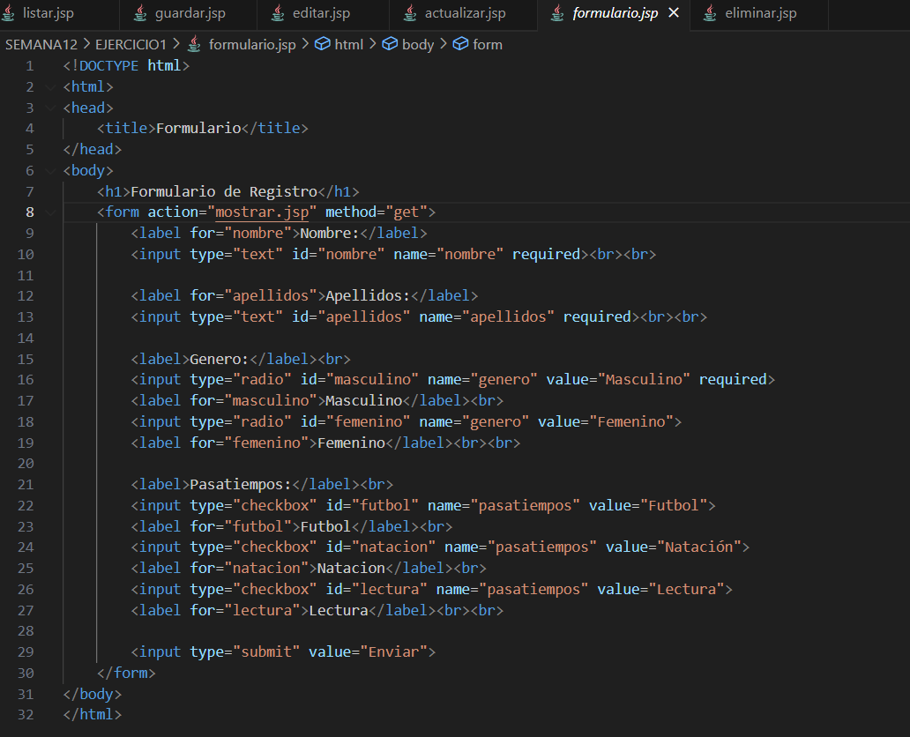
Ejecución del Ejercicio1
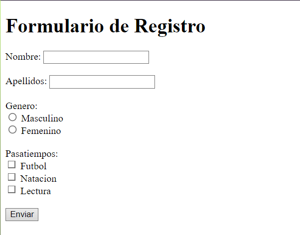Ejercicio 2
Desarrollar un formulario con nombre apellidos (input text) genero (input radio) pasatiempos: futbol, natación, lectura (input check) capturar los datos y mostrarlos en otro archivo jsp mediante el método post.
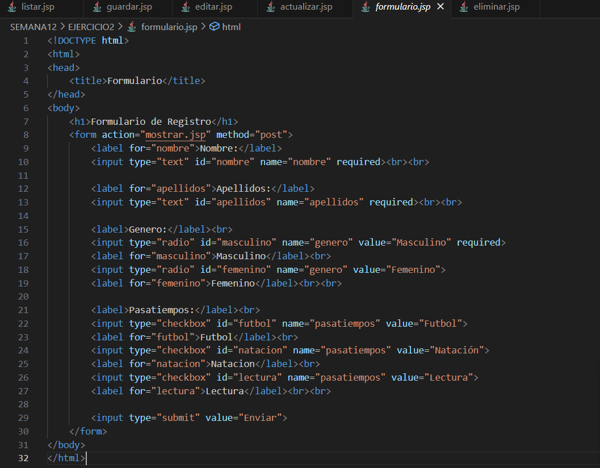Ejecución del Ejercicio2
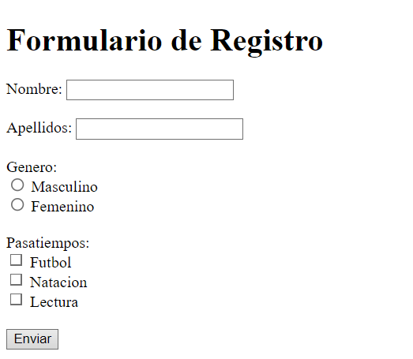Ejercicio 3
Declare un array multidimensional con los datos de 10 estudiantes y mostrarlos en un JSP que muestre una tabla estilizada con css.
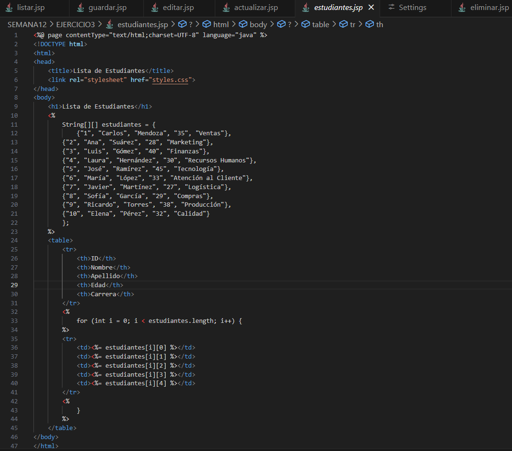Ejecución del Ejercicio3
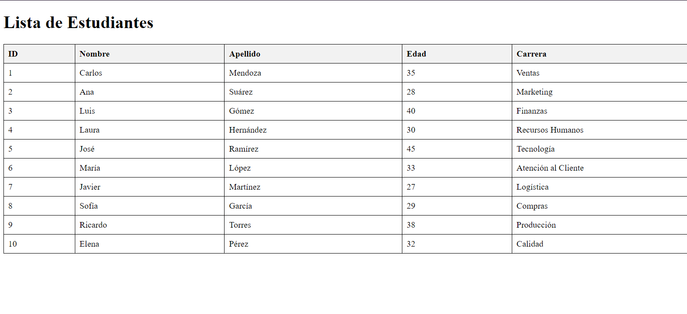Ejercicio 4
Desarrolle un CRUD completo en JSP con una base de datos en MySQL utilizando JDBC para una tabla estudiante
Actualizar.jsp
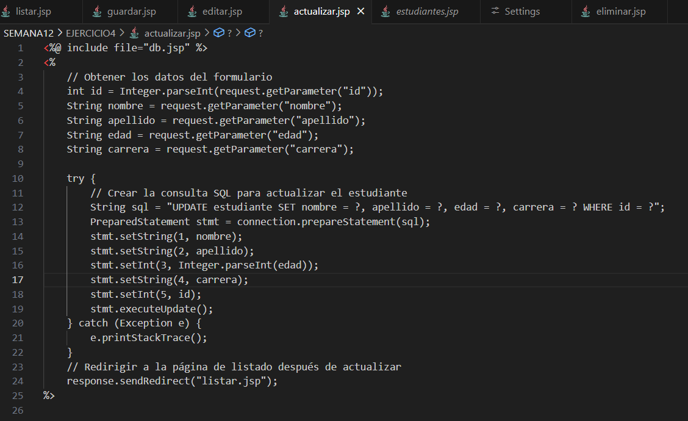Agregar.jsp
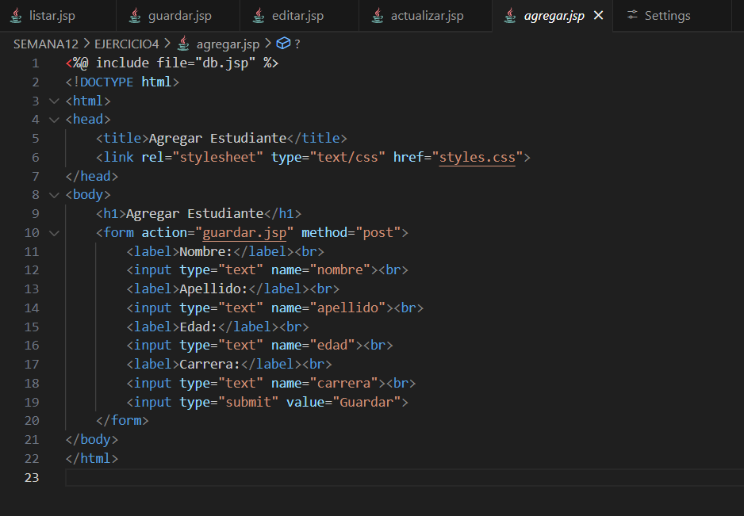Editar.jsp
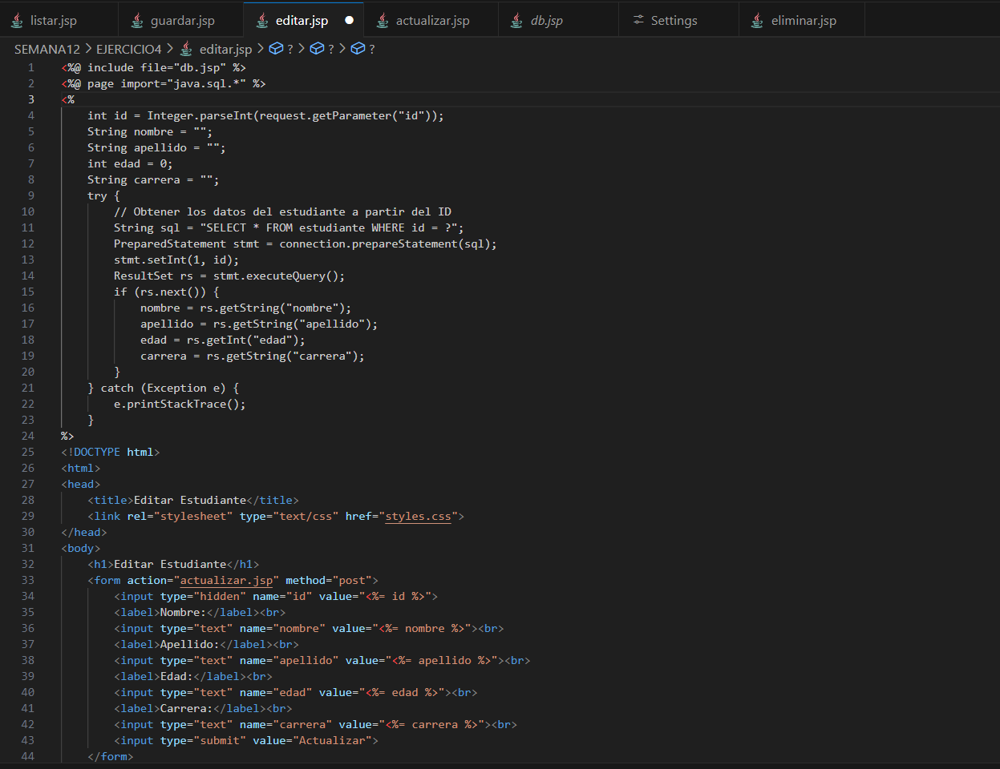Eliminar.jsp
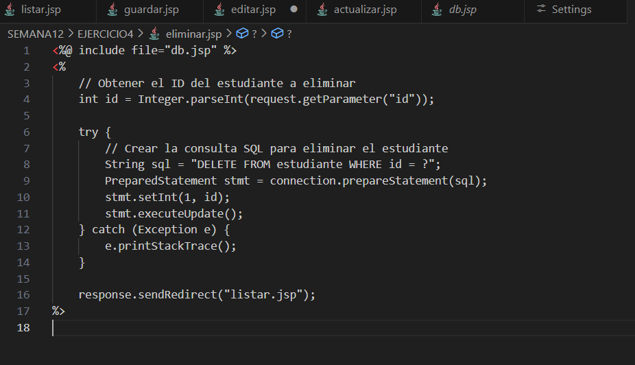Guardar.jsp
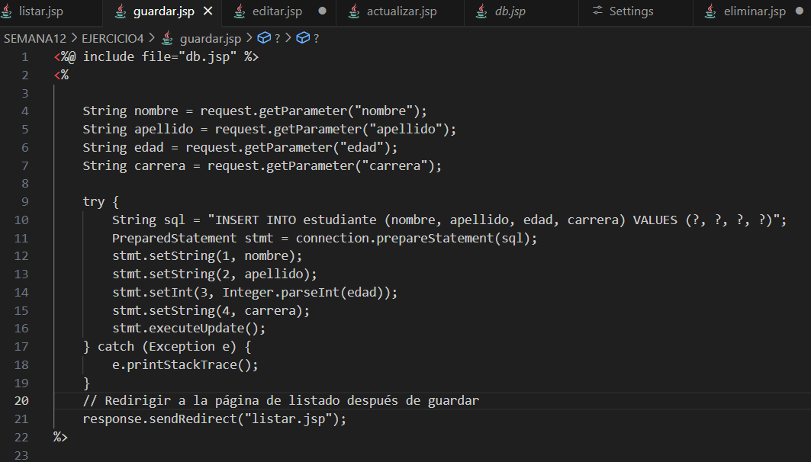Listar.jsp
mysqlDB
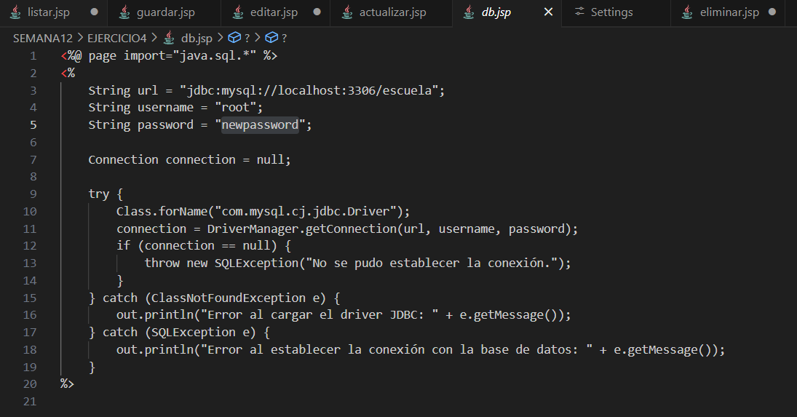Ejecución del Ejemplo
La siguiente imagen muestra la ejecución del ejercicio 4
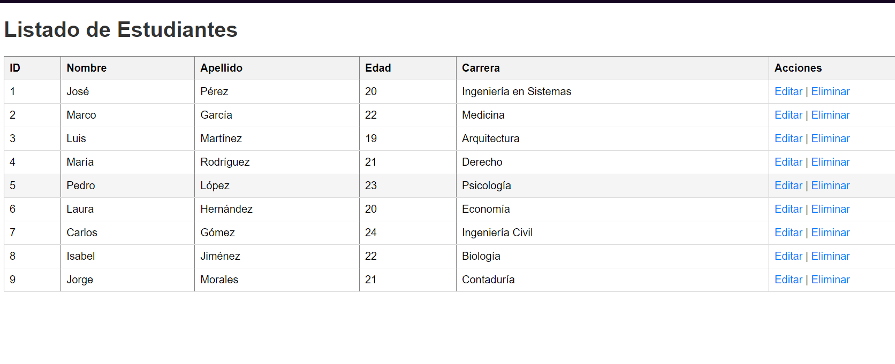